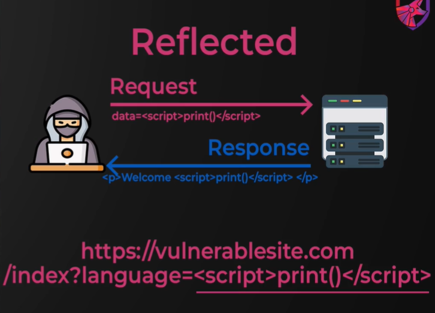

It's actually a very flexible vulnerablity and can be used to chain other issues together.
In a nutshell, it lets us execute JS in a victim's browser and often gives us control over the application for that user.
Three main types of cross site scipting:
Reflected
Sotred
DOM-based
Important Topic for Interview
Reflected:

Reflected cross site scripting is where the script you're trying to inject comes from the current HTTP request
You send a request
You get a response
That script is included in the response.
It's somewhat limiting as you can only target yourself unless the payload is via the URI
Stored

Stored cross site scripting is much more powerful and the payload is stored in a database and than retrieved later.
This allows you to attack other users and therefore the impact of
the vulnerability is much higher

DOM-based scripting is that the Client Side has some vulnerable JS that users untrusted inputs instead of having a vulnerability Server Side.
This allows you to attack other users and therefore the impact of
the vulnerability is much higher
Will use dev tools built into the browser to demonstrate and later on we'll actually have find a place where we can inject our code rather than just executing JS manually in the Client.
Press Ctrl + Shift + C
Command : alert(1)
is the most famouse cross site scripting payload that you will come across.
Avoid using alter(1) cuz of the changes in Chrome and also how often it's filtered and detected.
Mentor recommend when u're testing for XSS either use print or prompt
LogKey:
function logKey(event){console.log(event.key)}
document.addEventListner('keydown', logKey)